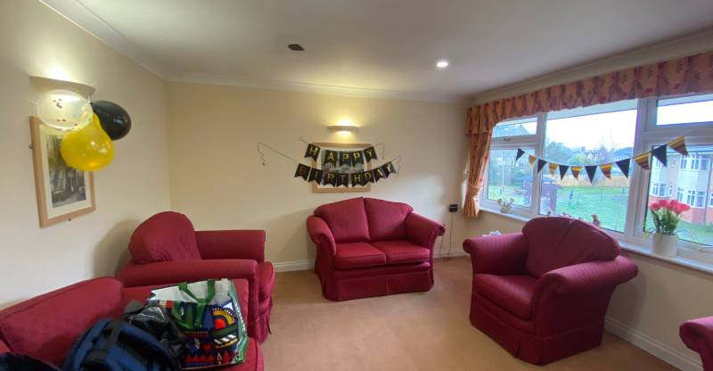
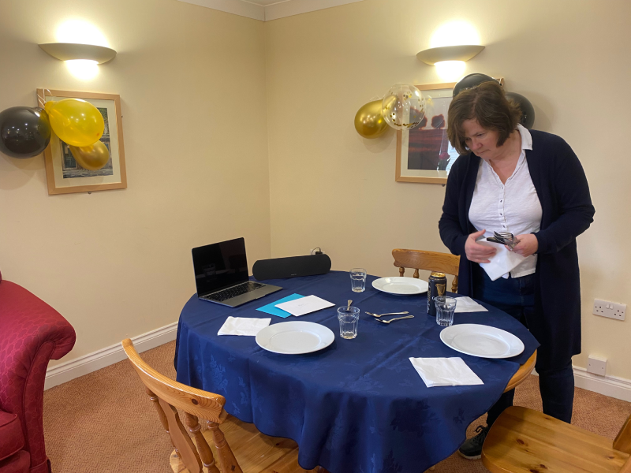
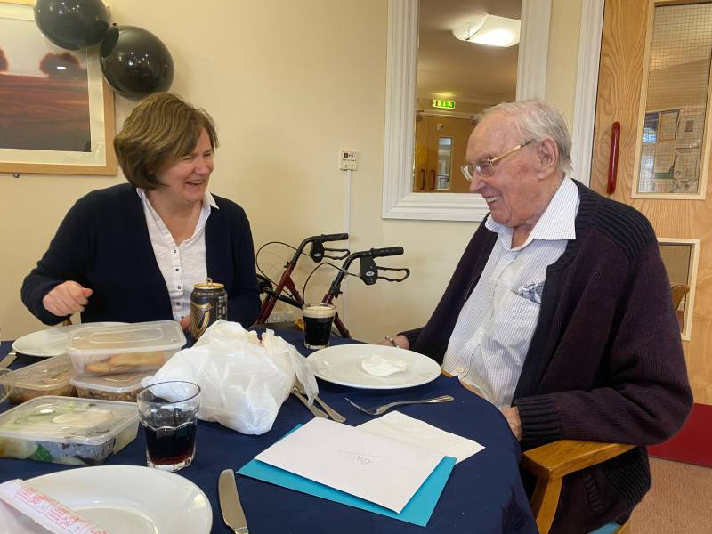
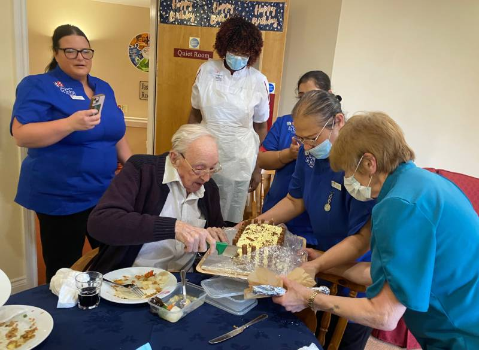
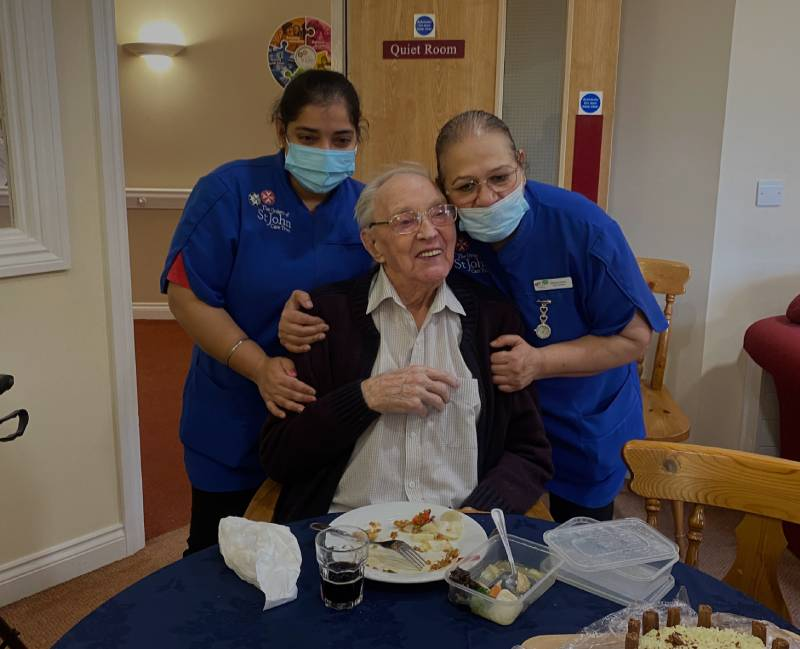

As it had been a bit of a struggle with Ron getting in and out of the car for Xmas, Rachel hit upon the idea of taking a meal to him as part of his 101st birthday. We set this up with the home and they arranged to have the quiet room on the floor booked for us for the lunchtime. I have to admit I didn't even know there was a quiet room!
We got there at just before lunchtime and sneaked in to start setting things up. The care team had put a 'Happy birthday' banner on the door to keep people out, and put up a table and some chairs for us. They'd even supplied a tablecloth (we'd brought one just in case). A pot of tea was also brought in for us by one of the care team (I think it's like a muscle memory reaction by them) and she scuttled off to get us some plates and cutlery.
We'd brought some decorations with us, purchased via Amazon, and tried to make the room a little more festive


Next, we had to order the food from the chinese restaurant. The one we used to all go to together in Summertown wasn't open for lunchtime orders due to staff shortages, so we picked on Zheng instead (a bit pricier and more awkward to get to). The food was almost ready to pick up by the time we got there.
I had worried that Ron would wonder why he wasn't being taken in to lunch like the others there, but he'd conveniently fallen asleep, so our food excursion went unnoticed.
Once back, Rachel got all the food laid out and I went to wake him up. He was well under, and took a little while to come round. When he did, he was back to rubbing his eye a lot, which I tried to discourage.
When I wished him happy birthday he knew it was his birthday, but wasn't sure which one. When I told him he was 101 he really didn't believe it. I think he surprises himself sometimes with how long he's lived.
Back in the quiet room, he was delighted to see the chinese meal and the decorations (also the nice cold Guiness donated by Rachel's dad. We swapped out the chair for one with arms so he could be more comfortable.

He's having some trouble swallowing - not sure why - so the Guiness didn't go down as smoothly as we'd hoped. The same thing happened at Xmas. Rachel cut his food up for him so it would go down more easily.
Then it was time for our next surprise - calling the rest of the family on a zoom call. We had Karen and Ricardo, Damian, Sarah and Fabian, and Chani all there to wish him happy birthday. He was really happy to see his great grandson. Some online silliness may have taken place, as often happens with the Lawrences. It was as nice catching up with everyone as it was having Ron as part of it.
As if it had been arranged just for the zoom callers, the care team arrived with a big cake for him to cut, and to sing him 'happy birthday'. Most of them worked until 2pm so wanted to do this before they left for the day. The affection they have for him is really touching - I'm so pleased he's here with such lovely people looking after him


Once the cake was finished we took him back to his room and brought back some of the decorations. Still not convinced about being 101 we pointed to his 100th birthday card on the wall as proof.
As we had a long drive home we'd taken a decision to leave at 2pm, but when it came to it that felt a hard thing to do. He'd really come alive and was bright and cheerful now. But he was lovely about us leaving, and so we gave him some hugs and went on our way, thanking the amazing staff for making his day special.